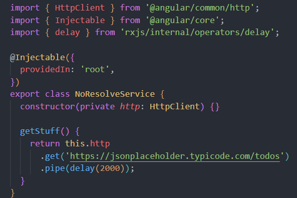
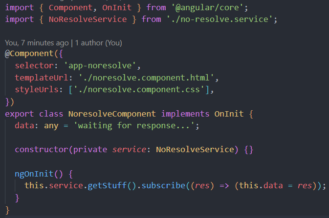
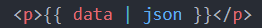

What's going on here?
-
First, check out the resolve tab above that explains how resolve guard
works
-
Here, we are using a service to return an HTTP GET request and render the
data returned in the template
no-resolve.service.ts

-
This service has one method, getStuff(), that returns an observable from
an HTTP GET request
-
I am using rxjs's delay method to mock a large payload that takes 2
seconds to receive
-
In our component's typescript file, we use the constructor to inject this
service, and in ngOnInit(), we set a variable to what is returned from the
getStuff() method in the service
noresolve.component.ts + noresolve.component.html


-
Notice that we are able to land on this page before data has been rendered
leading to poor user experience